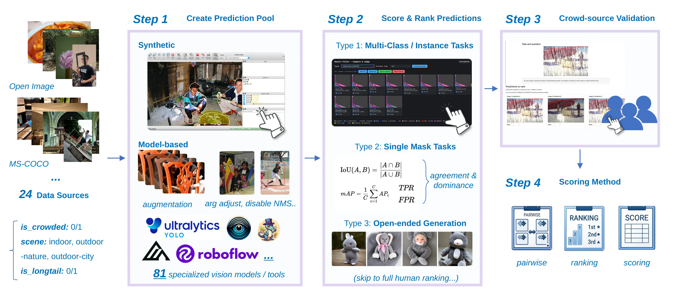

TL;DR
Tool-using MLLM agents must read the outputs of vision tools (boxes, masks, keypoints, depth maps) before acting on them, and how a tool's output is encoded back into the model changes how well it is read: the best and worst encoding of the same prediction differ by up to 19 pp of judging accuracy. Vision-Judge evaluates 33 MLLM judges, sweeps 38 encodings and gives a recommended encoding order for every task, which we then test inside tool-using agents: judging accuracy predicts tool-use accuracy (r = 0.90), and encoding preferences carry over, in part model-specifically.
Main result
Recommended encoding order, per task
Encodings ranked by their median pairwise judging accuracy across the 11 judges of the controlled encoding-analysis subset (7,311 questions) (prompt, candidate pair and ground-truth winner held fixed; only the encoding changes). ① is what we recommend feeding back to an MLLM for that tool; the bar shows the median, the dashed line chance (0.5). Click any row to open it in the explorer.
Interactive
Encoding Explorer
An encoding has an optional visual part i ∈ I and an optional textual part t ∈ T, with at least one present: E = (I ∪ {∅}) × (T ∪ {∅}) ∖ {(∅, ∅)}, so the modality (image only, text only, image + text) follows from which parts are present. Each encoding also fixes the instruction that tells the judge how to read it (palette, label placement, colormap, coordinate convention). For each task a base encoding mirrors typical tool output, and each ablation changes one factor. Pick a task and a candidate. The viewer auto-stitches through every encoding of the same prediction; switch to Compare and drag the seam to diff two encodings. All renders below come from the benchmark's own encoders.
From judge to agent
Using the recommendations as a run-time formatter
Ten open-weight SpAgent controllers, and three controllers (Gemini 3.5 Flash-Lite, Gemini 3.8 Flash, Qwen2.5-VL-72B) in three tool-using frameworks (SpAgent, ViperGPT, ReVPT), on CV-Bench rephrased, NYU depth pairs and COCO crowd counting.
Judging accuracy predicts tool-use accuracy
Across 10 controllers, Vision-Judge accuracy correlates with CV-Bench accuracy with tools at r = 0.90 (ρ = 0.93), and at r = 0.79–0.92 for every question type. Generation, depth and instance-segmentation judging track it most closely; detection judging least (r = 0.32).
Preferences transfer, and can be model-specific
The top judges prefer labelled boxes with text, and so do the Gemini agents (best in 4 of 6 controller–framework pairs; text-only costs up to 5.3 pts). Qwen2.5-VL-72B's own judging ranks [x1, y1, x2, y2] text first, and its agents agree (best with ReVPT, +4.4, and ViperGPT). For a controller that departs from the average, its own ranking is the better guide.
A near-tie predicts no reliable winner
Small vs. big detection labels (both .870) change agent accuracy by −2.4 to +1.8 pts with no consistent sign; Turbo, Plasma and grayscale depth (.798 / .796 / .791) lie within 3 pts in 14 of 18 columns, and the winner changes with framework and benchmark.
A judging gap need not become an agent gap
Polygon text trails masks on black by 8.6 pts in judging, yet in SpAgent crowd counting the four instance encodings lie within 2.5 pts for every controller, within run-to-run spread.
Benchmark
Curation pipeline
(1) A prediction pool is built from 24 data sources with 81 specialised vision models and tools, plus synthetic error-typed candidates. (2) Candidates are scored and ranked by agreement and dominance of task metrics; open-ended generation goes straight to human ranking. (3) Rankings are validated by crowd-sourced annotators. (4) Each ranked group becomes pairwise, ranking and scoring judging questions.

Task coverage
| Task | Candidates | # Inst. | # Cand. | # Img. | Data sources | Model zoo / perturbations |
|---|---|---|---|---|---|---|
| Total | 1,750 | 5,259 | 1,302 | unique input images across tasks (24 datasets) | ||
Data
One ranking row per input, candidates best first
Each task is one config with a single ranking split. A row holds the input context (coi, prompt, error_type, instance_type) and its rendered candidate outputs in media, ordered best first, with the matching annotation_ids.
from datasets import load_dataset
# one config per task, one "ranking" split each:
# depth, generation, instance_segmentation_model,
# instance_segmentation_synthetic, keypoint, lowlevel,
# object_detection, referring_segmentation_model,
# referring_segmentation_synthetic, semantic_segmentation
ds = load_dataset("Anonymous-44kk/Vision-Judge",
"object_detection", split="ranking")
row = ds[0]
best, *rest = row["media"] # candidates, best first (PIL images)
print(row["coi"], len(row["media"])){
"task": "object_detection",
"image_id": "…coco_val2017_000000078420",
"error_type": null, // task-specific failure label
"instance_type": "1C1I", // 1C1I | 1CnI | nC1I | nCnI
"coi": ["laptop"], // classes of interest
"prompt": null, // text query (referring / generation)
"media": [ <img #1>, <img #2>, <img #3>, <img #4> ],
// rendered candidates, best first
"annotation_ids": [ "…det_472…", "…det_466…",
"…det_473…", "…det_470…" ]
}Citation
@inproceedings{visionjudge2027,
title = {Evaluating Multi-modal Large Language Models as Judges for Vision Tasks},
author = {Anonymous},
booktitle = {Under review},
year = {2027}
}